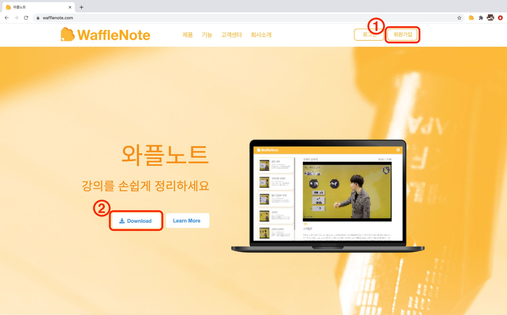
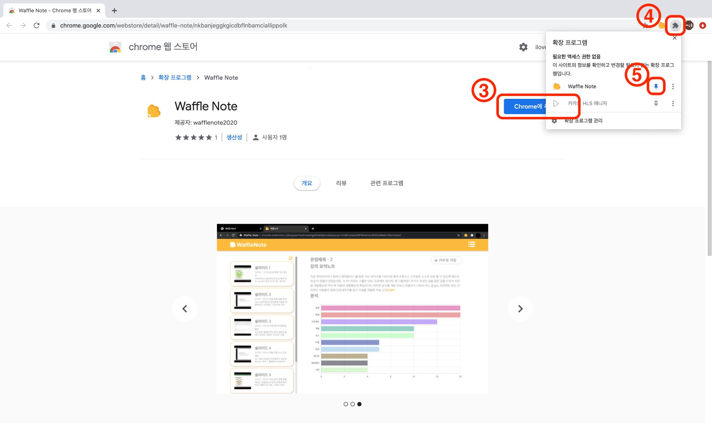
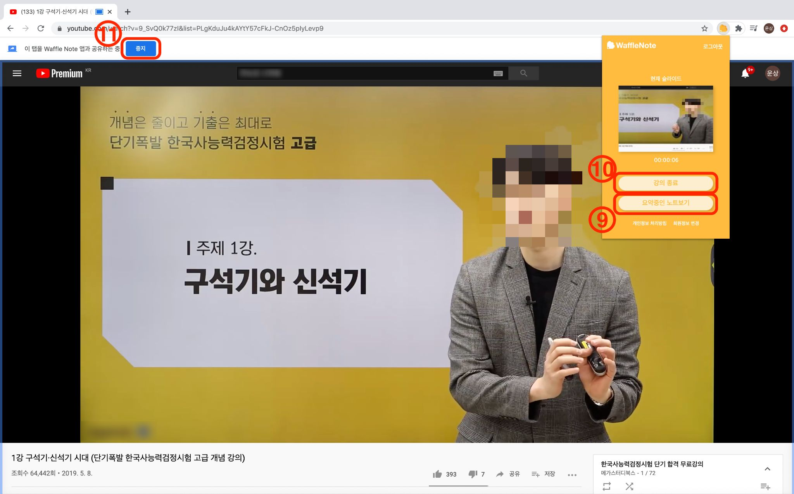

와플노트 이용 가이드
1 ) 와플노트 홈페이지에서 회원가입을 해주세요.
2 ) 와플노트를 다운로드 하기 위해 크롬 웹 스토어에 접속해주세요.

2 ) 와플노트를 다운로드 하기 위해 크롬 웹 스토어에 접속해주세요.
3 ) "Chrome에 추가" 버튼을 통해 다운로드 해주세요.
4 ) 확장프로그램을 클릭하면 와플노트가 다운로드 되었음을 확인할 수 있습니다.
5 ) 클립을 설정하면 더 빠르게 서비스에 접근 할 수 있어요

4 ) 확장프로그램을 클릭하면 와플노트가 다운로드 되었음을 확인할 수 있습니다.
5 ) 클립을 설정하면 더 빠르게 서비스에 접근 할 수 있어요
6 ) 아이콘을 클릭하여 와플노트를 실행하고 로그인을 한 후 강의시작 버튼을
클릭해주세요.
7 ) 지금 듣고 계시는 강의를 클릭하고
8 ) 공유버튼은 누르면 와플노트가 실행됩니다.
7 ) 지금 듣고 계시는 강의를 클릭하고
8 ) 공유버튼은 누르면 와플노트가 실행됩니다.
* 사용가능한 강의 플랫폼은 ZOOM, Google Meet, YouTube 등 다양하지만
반드시 크롬 웹 브라우저에서 실행 중 이어야만 합니다.

9 ) 강의 도중 와플노트를 확인하거나, 이전의 노트를 보고 싶으시면
"요약중인 노트보기" 버튼을 클릭하시면 됩니다.
10, 11) 강의를 끝내고 싶으시면 "강의 종료"나 "중지" 버튼을 클릭해주세요.

10, 11) 강의를 끝내고 싶으시면 "강의 종료"나 "중지" 버튼을 클릭해주세요.